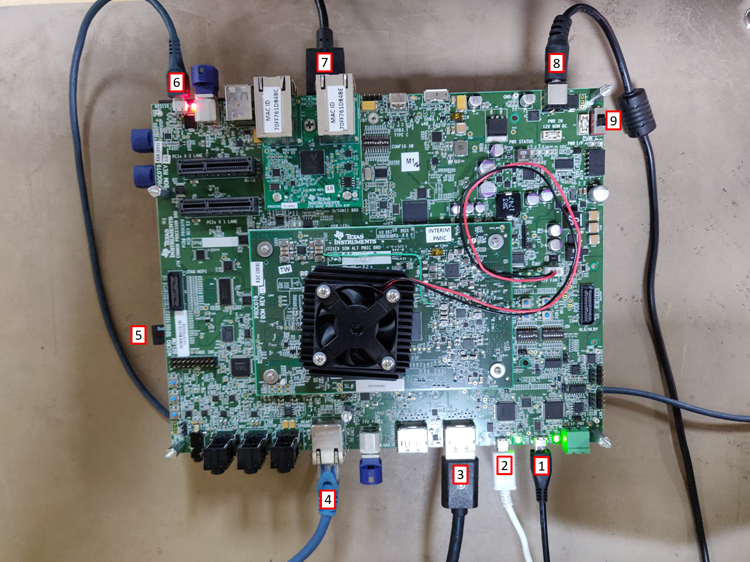
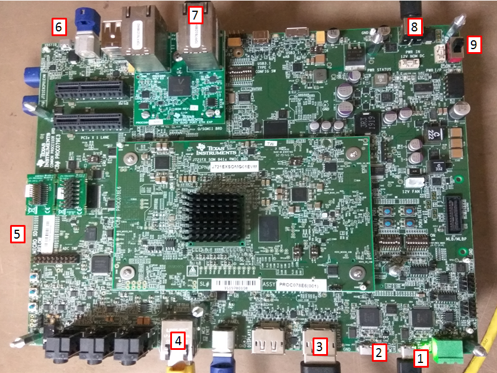
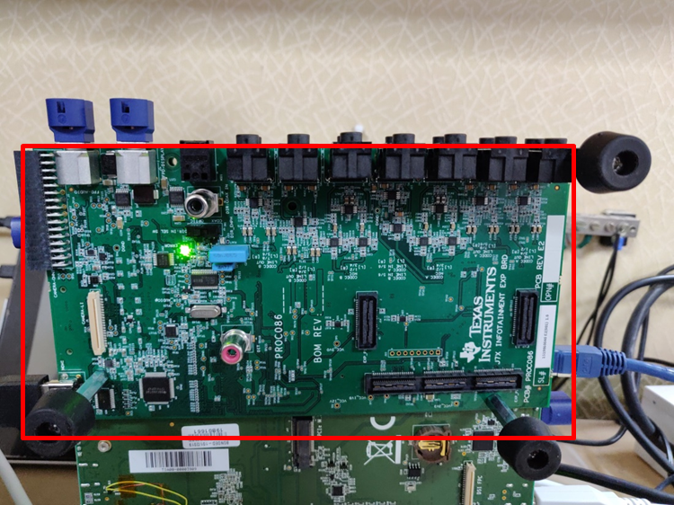
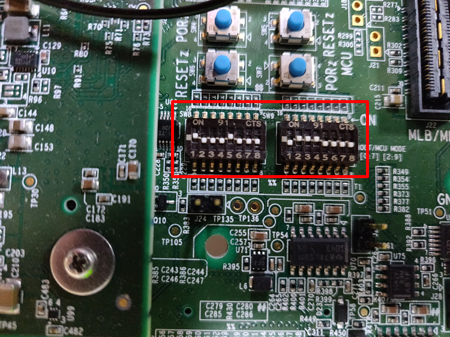

4.2.1. J721E EVM Hardware Setup¶
Description
The J721E Evaluation Module provides an affordable platform to quickly start evaluation of Jacinto™ DRA8xx Processors and accelerate development for Infotainment, ADAS, Gateway and many other automotive applications.
The J721E Evaluation Module consists of a SoM(System on Module) and a common processor board.
J7ES SOM
System on Module is a small board which has the SoC specific socket and other important platform specific hardware like PMIC, DDR memory, etc
There are 2 variants. Following are the images of EVMs with different versions of SoM:
Alpha board
Note
Alpha EVMs have “Interim PMIC” sticker on the SoM board.
Beta board
Note
Beta EVMs don’t have a “Interim PMIC” sticker on the SoM board.
Contents of the board
J721e SoC
Power controller
4 GiB DDR RAM
OSPI NOR flash
Hyperflash
Common Processor Board
Common Processor Board is the main board which has peripherals to provide most common functionality. It allows to connect to different adapter cards.
Common Processor Board with ALPHA-SOM
Common Processor Board with BETA-SOM
Contents of the board
Refer to EVM connections for detail information regarding connecting peripherals to Common Processor Board
12V Power input
4xUART to USB port for Main uarts
2xUART to USB port MCU domain uarts
5x Ethernet ports
2x Display ports
2x FPDlink display connectors
7x 3.5mm audio jacks
2x PCIe connectors
SD card slot
8GiB eMMC
Infotainment daughter card
Infotainment daughter card is adapter board which has additional peripherals for infotainment use cases. This has support for HDMI display, FPDlink display extra audio channels, CSI camera, etc
Contents of the board
14x 3.5mm audio jacks
2x FPDlink display connectors
Parallel port Omnivision camera connector
CSI camera connector
HDMI display connector
GESI daughter card
GESI(Gateway/Ethernet Switch/ Industrial) daughter card is adapter board which has additional peripherals for gateway and industrial use cases. This has support for extra ethernet ports and CAN ports, etc

Contents of the board
5x ethernet ports
Profinet connector
Motor control headers
Additional CAN headers
Switch settings
Most common boot method is to use SD card. Following are the switch settings to set the boot mode to SD for common processor board.

When you want the binaries to be loaded from a debugger like CCS, the common processor boards has to be set in the NO boot mode. Following are the switch settings to do the same.
EVM connections
Connect Following peripherals for working with processor SDK Linux
MAIN_UART is a USB connector to connect 4x main UART devices, this will register /dev/ttyUSB[0-3] in your Linux machine.
MCU_UART is a USB connector to connect 2x mcu UART devices. this will register /dev/ttyUSB[4-5] in your Linux machine.
Note
Connect the MAIN_UART and MCU_UART in order so that the device numbers are assigned correctly.
Connect a Display Port 1080p monitor to the Display0 port of the commonProcBoard.
Note
Only the monitor with preferred resolution as 1080p shall be used, any other resolution is not supported.
Connect ethernet at the RJ45 connector[4] in the commonProcBoard as shown.
Insert micro SD card at the slot shown in ][5]
Connect the XDS110 connector[6] if you want to run RTOS demos or use CCS.
Connect a 1080p HDMI monitor to the HDMI port[7] port on the Infotainment daughter card.
Note
For Linux demos, keep the bootswitch settings in SD mode For Gateway demos, keep the bootswitch settings in noboot mode
Connect a 12V power supply
Power on the board